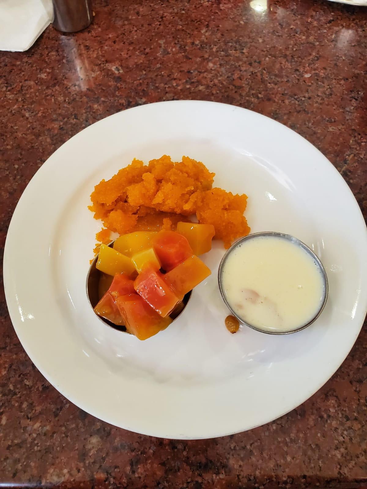

INGREDIENTS
3 tablespoons canola oil
2 medium yellow onions, chopped
1 large green bell pepper, cored, seeded, and chopped
1 large jalapeño chile, cored, seeded, and chopped
7 garlic cloves, finely chopped
1/4 cup tomato paste
One 28-ounce can whole peeled tomatoes, crushed by hand
1 bay leaf
2 1/2 tablespoons sugar
1 1/2 tablespoons kosher salt
1 tablespoon sweet Hungarian paprika
1 tablespoon ground cumin
1 1/2 teaspoons freshly ground black pepper
1 teaspoon ground caraway
1/2 bunch Swiss chard, stemmed and chopped, or spinach
8 to 12 large eggs
PREPARATION
1. Heat the oil in a large skillet. Add the onions and sauté over medium heat until translucent, 5 to 10 minutes. Add the bell peppers and jalapeño and cook just until softened, 3 to 5 minutes. Stir in the garlic and tomato paste and sauté for another 2 minutes.
2. Slowly pour in the tomatoes. Stir in the bay leaf, sugar, salt, paprika, cumin, pepper, and caraway and let the mixture simmer for 20 minutes. Layer the Swiss chard leaves on top.
3. Crack the eggs into the tomato mixture. Cover and simmer for approximately 10 minutes or until the whites of the eggs are no longer translucent.

INGREDIENTS
Banana pepper - 5-8 numbers.
Oil - to fry.
Onions - 1 number.
Coriander leaves(chopped) - 1 tea spoon.
Chat masala - 1/2 tea spoon.
Lemon juice - 1 tablespoon.
Chick pea flour - 2 cups.
Baking soda - 1/2 tea spoon.
Turmeric powder - 1 pinch.
Salt - to taste.
Carom seeds - 1/2 tea spoon.
Tamarind paste - 2 tablespoons.
Red chili powder - 1/2 tea spoon.
Roasted chana dal powder - 2 tablespoons.
Roasted peanuts - 1-2 tablespoons.
PREPARATION
1. In a mixing bowl add chickpea flour, baking soda, turmeric powder, salt, 1/4 teaspoon carom seeds, 1 tablespoon oil, add some water use a whisk to blend all together make a thick batter keep it aside.
2. For filling take another small bowl add thick tamarind Paste, chilli powder, 1/4 teaspoon carom seeds, salt to taste, 2 tablespoons Roasted chana dal powder and mix it well like a thick Paste.
3. Take Green chills make one slit and remove the seeds, then put the prepared mixture inside the Chili, repeat for all the chillies.
4. When the oil is ready for frying, dip the stuffed Chili into the chickpea batter and deep fry till slightly golden in color all over turning occasionally.
5. Now cut each chilli pakoda into pieces and fry in hot oil till they are brown and crispy.
6. Add chopped onions, peanuts, sprinkle some chat masala, chopped coriander leaves, squeeze some lemon juice and serve as a starter.

INGREDIENTS
Ghee or butter - 6 teaspoons.
Cream of wheat (rava) - 1 tea spoon.
Sugar - 1 cup.
Milk - 3 cup.
Cashewnuts - to taste.
Raisins - to taste.
Cardamom powder - 1 tea spoon.
Saffron strands - to taste.
PREPARATION
1. Heat butter or ghee in a non stick pan, fry cashew nuts and stir them until they become light brow. and add raisins till done. Remove and keep aside.
2. Add the rava(cream of wheat) to the same ghee pan and stir the rava till that comes to light brown or raw flavor goes away. Then remove from heat and keep aside.
3. Boil 3 cups of milk when reaches boiling stage add sugar. When sugar dissolves add rava while stirring to avoid lumps and cook till its almost dry.
4. Grease a baking pan or a plate and pour this mixture on it.
5. Garnish with cashews, raisins, saffron strands and cardamom powder.
INGREDIENTS
Corn meal flour - 1/2 cup.
All purpose flour - 1 cup.
Salt - to taste.
Water - as required.
Oil - as required.
Butter (cubes) - 2 number.
Milk - 1 cup.
Shredded cheese (grated) - 1 cup.
Pepper powder - 1/4 tea spoon.
PREPARATION
1. Take a bowl, add cornmeal flour, all purpose flour, salt and mix nicely.
2. Add water and mix nicely to make slight stiff dough.
3. Dust some flour and roll into slightly thick sheet. Cut vertically with pizza cutter.
4. Dust some flour again and place one slice on another and cut into triangles.
5. Give gashes with fork and deep fry in hot oil until slightly golden in colour. Transfer into a paper towel.
6. Heat butter in a pan, add 1 teaspoon of all purpose flour and mix it. Remove the pan from stove.
7. Then add milk to it, place it on stove and keep mixing it. Once the mixture come to thick consistency, switch off the flame.
8. Add shredded cheese to it and mix nicely. Switch on the flame and mix it again.
9. At last, sprinkle pepper powder and mix it.
10. Take a serving bowl, arrange the nacho's and pour the cheese on its top and serve it.

INGREDIENTS
Chicken wings - 250 grams.
Chili powder - 1 tablespoons.
Coriander leaves (chopped) - 1 bunch.
Curry leaves (chopped) - 1 springs.
Turmeric powder - 1/4 tea spoon.
Green chilies (slited) - 3 number.
Sesame seeds - 1 tablespoon.
Butter - 2 tablespoons.
Egg - 1 number.
Check pea flour - 2 tablespoons.
Rice flour - 2 tablespoons.
Salt - to taste.
Chaat masala - 1 tea spoon.
Pepper powder - 1 tea spoon.
Garam masala powder - 1 tea spoon.
Lemon juice - 1 tablespoon.
PREPARATION
1. Marinate chicken wings with salt, rice flour, chickpea flour, egg (optional) and mix it well.
2. Then deep fry the chicken wings in hot oil till they turn to light brown in color. Keep it aside.
3. Heat a pan, add butter, sesame seeds and roast them.
4. To it, even add turmeric powder, green chilies, chopped curry leaves, coriander leaves, red chili powder, salt, chaat masala powder, pepper powder, garam masala powder and mix well.
5. At last, add fried chicken and toss it. Switch off the flame
6. Serve this delicious Indian style chicken wings by squeezing in some lime juice.